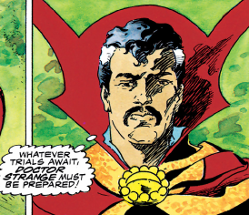
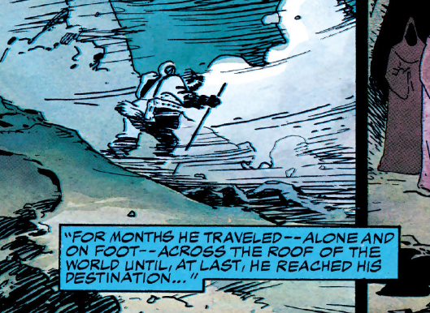
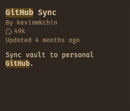
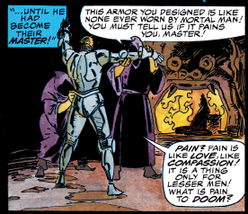
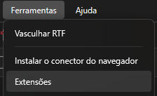
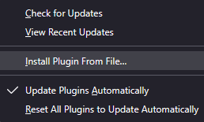

One App to Rule Them All
To revere mementos of the past is sometimes labeled sentimental or antiquarian by people who thoughtlessly repeat the cliché that to live fully we must concentrate on the present or the future and not dwell on the past. Ignoring the past, however, is not a choice that we have: to live fully presumably involves, by any definition, taking in our surroundings, making them our own, even if that comes to mean the embracing of chaos and alienation; and this process brings us face to face with the past, for everything we encounter is from the past. Our world is a world of artifacts. (Whether we choose to believe that objects owe their existence to our perception is irrelevant in this regard, for we still distinguish two levels of creativity: what we imagine that we have inherited, and what we do with it.)

 Do
you want to finally overwork your simple academic assignments and stop
using NotebookLM because you cannot remember a passage you read months
ago?
Do
you want to finally overwork your simple academic assignments and stop
using NotebookLM because you cannot remember a passage you read months
ago?
It seems you came to the right place…2

Git, GitHub, and Obsidian

 If
you want complete control over your notes, I strongly recommend, first
of all, having Git (which is absolutely necessary for some Zotero
extensions), a Github/Gitlab account and Obsidian.3 Git
can be downloaded from its own site: git-scm.com/download/win
(since this is for absolute beginners, yes, you are using Windows x64).
It’s pretty easy, I promise I’m not trying to make you all use
Emacs.
If
you want complete control over your notes, I strongly recommend, first
of all, having Git (which is absolutely necessary for some Zotero
extensions), a Github/Gitlab account and Obsidian.3 Git
can be downloaded from its own site: git-scm.com/download/win
(since this is for absolute beginners, yes, you are using Windows x64).
It’s pretty easy, I promise I’m not trying to make you all use
Emacs.

There are even tools, like LazyGit, that allow you to understand Git processes through visualization (UI). I still think it’s a very interesting repo, but you don’t really need it if you are a beginner, just ask an AI for the steps.
Set up a Github account, create a private repo and use the Obsidian extension to connect with your repositories as your archive.
Just click on repositories and hit “New”
And in your Obsidian vault, you just need to allow for community plugins and then search “Github”.

Trust me, this is going to make finding everything in the future way easier.

Zotero and Zotero-Scipdf
Download
Zotero from zotero.org/download (and
also its Connector for the browser).
For the thing that everyone is way more eager to use, it is called Zotero-Scipdf. First, you need to download Zotero and put its extension in your browser. Then, download the first file from this list here: zotero-scipdf releases (v8.1.0). With it in your Downloads, go to Tools and click on install add-on from file.

After that you just have to click Fetch PDF and it will search automatically (you can forget plenty of information, except the article’s DOI, or it won’t find anything).

But what about the other ones?
Better Notes and Syncing
Do
you remember we talked about Obsidian? The nicest way is probably to
download it and set it up to push your changes to Github right away. For
that, I would install zotero-better-notes.
And then you just pull the notes in Markdown and drop them there. With
everything set up in Obsidian and Github, you will never have to worry
about this again.
OCR with Tesseract
Interested
in OCR?
You will need the open-source OCR engine called Tesseract. It’s pretty easy, and once installed it even works inside your Terminal, without the need of Zotero.
The latest installer can be downloaded here: tesseract-ocr-w64-setup-5.5.3.20260724.exe (64 bit).
And then you need to go to zotero-ocr-0.9.5.1.xpi
and do the same installation process as the other extensions (install
the .xpi as a plugin in your Zotero).